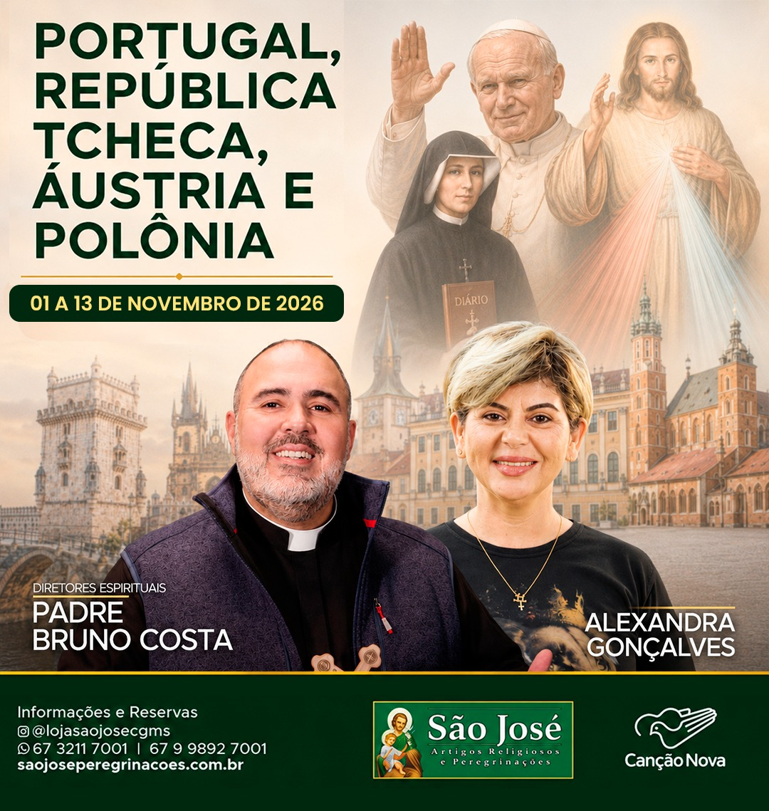

A partir de Guarulhos todos os voos e roteiro em grupo.
Recepção no aeroporto e continuamos para Fátima. À noite possibilidade de participar da procissão das velas e oração do Santo Terço na capelinha das aparições. Jantar e pernoite.
Refeição inclusa: jantar.
Café da manhã e visita a Fatima. O Santuário de Nossa Senhora do Rosário de Fátima (mais conhecido, simplesmente, por Santuário de Fátima), localizado na Cova da Iria, freguesia de Fátima, é um dos mais importantes santuários marianos do mundo. Em 1917 Jacinta Marto, Francisco Marto e Lúcia dos Santos (conhecidos por "os três pastorinhos"), dizem ter presenciado seis aparições de Nossa Senhora nos dias 13, de maio a outubro, tendo em agosto acontecido no dia 19. No essencial da mensagem, Nossa Senhora teria pedido que se rezasse o terço todos os dias, conversão e penitência. Numa dessas aparições, a Virgem Maria pediu para construírem uma capela naquele lugar, que atualmente é a parte central do Santuário onde está guardada uma imagem de Nossa Senhora. Dia inteiro dedicado a visitas. Jantar e pernoite.
Refeições inclusas: café da manhã e jantar. Celebração eucarística: Santuário de Fátima
Café da manhã. Seguimos para Lisboa, visitaremos a igreja de Santo Antônio e Sé de Lisboa. Na sequência, seguimos para o bairro de Belém, para visita à Fábrica dos Pastéis de Belém, conhecidos em Portugal como pastel de nata. Seguimos a nossa visita para o Mosteiro dos Jerônimos, mosteiro manuelino, testemunho da riqueza dos descobrimentos portugueses. Visita ao Túmulo de Vasco da Gama e de Luís de Camões; Em seguida visitaremos a Torre de Belém e Padrão dos Descobrimentos. Parada para o almoço (não incluído). Em seguida, dirigimo-nos à região central de Lisboa. A Praça Marquês de Pombal, a Avenida da Liberdade, a Praça dos Restauradores, com seu obelisco da restauração da independência portuguesa, a Praça de Dom Pedro IV, mais conhecida por Rossio, e Baixa Pombalina. Acomodação no hotel, jantar e pernoite.
Refeições inclusas: café da manhã e jantar. Celebração eucarística: Igreja de Santo Antônio
Após café da manhã no hotel, em horário apropriado, saída para o aeroporto de Lisboa. Voo com destino a Praga. Chegada, recepção no aeroporto, acomodação no hotel.
Refeições inclusas: café da manhã e jantar. Celebração eucarística: a definir
Café da manhã no hotel e saída para visita da cidade de Praga. Durante este passeio, você vai adquirir uma imagem geral sobre a cidade de Praga, considerada uma das mais belas capitais da Europa. Vai apreciar o tesouro histórico e arquitetônico da cidade de cem torres, a famosa Igreja da Nossa Senhora da Vitória com o milagroso Menino Jesus de Praga. A caminhada irá continuar ao longo da Ponte Carlos, a Cidade Velha, onde, na sua Praça Velha, fica o badalado relógio astronômico. Em hora a indicar retorno ao hotel para jantar e hospedagem.
Refeições inclusas: café da manhã e jantar. Celebração eucarística: Igreja onde está o Menino Jesus de Praga
Após café da manhã no hotel, saída para tempo livre em Praga. Após almoço, seguimos para Viena. Chegada, acomodação no hotel e jantar.
Refeições inclusas: café da manhã e jantar. Celebração eucarística: a definir
Café da manhã. Visita pela cidade percorrendo a ‘Ringstrasse‘, os Museus de Belas Artes e Ciências Naturais, o monumento a Maria Teresa, o Parlamento, a Prefeitura, o Teatro Nacional, o Palácio Imperial ‘Hofburg`, catedral de St Estevão. Visitaremos também o Palácio de Schönbrun e seus jardins (Ingressos inclusos), considerado Patrimônio da Humanidade pela Unesco, é sem dúvida um dos maiores tesouros da cidade. Tarde livre para compras. Regresso ao hotel ao fim da tarde, jantar e hospedagem.
Refeições inclusas: café da manhã e jantar. Celebração eucarística: a definir
Após café da manhã, saída para Wadovice. Chegada e visita da terra natal de São João Paulo II. Visita da casa onde nasceu e da igreja onde foi batizado. Acomodação no hotel e jantar.
Refeições inclusas: café da manhã e jantar. Celebração eucarística: a definir
Café da manhã no hotel, partida para o campo de concentração de Auschwitz, um dos locais mais cruéis, símbolo do nazismo, local de extermínio de milhões de prisioneiros, entre eles o Santo Maximiliano Kolbe. Este campo funcionou entre 1940 e 1945. Podemos ver as várias salas, que contêm pertences dos prisioneiros, os dormitórios, os banhos e os fornos, que nos lembra as cenas de horror que ali tiveram lugar, e que devem ficar como memória para que o homem jamais volte a atingir tamanha degradação. Seguimos para Cracóvia, faremos a visita do Mosteiro de Lagiewniki, centro mundial da Divina Misericórdia e do túmulo de Santa Faustina (irmã Faustina Kowalska). A noite, saída para jantar em restaurante típico com espetáculo de folclore. Hospedagem.
Refeições inclusas: café da manhã e jantar. Celebração eucarística: a definir
Após café da manhã, seguimos para Varsóvia, faremos uma visita guiada da cidade, começando pelo Palácio da Cultura e Ciência. Além disso, visitaremos os Jardins Reais de Lazienki, o parque mais importante e distinto da capital polonesa, onde está o monumento a Federico Chopin. Conheceremos os locais do martírio durante a ocupação nazista, a área do antigo gueto de Varsóvia e o monumento dos Heróis do Gueto, Umschlagplatz, local de deportação de judeus. Faremos uma caminhada pela Cidade Velha, inscrita na UNESCO, Coluna de Sigismundo, Praça do Mercado, Muros, Barbakan, Casa de Marie Curie Sklodowska e o Monumento da Revolta de Varsóvia. Acomodação no hotel e jantar.
Refeições inclusas: café da manhã e jantar. Celebração eucarística: a definir
Após café da manhã no hotel, em horário apropriado, transfer para o aeroporto. Voo com destino a Guarulhos.
Desembarque no aeroporto de Guarulhos.
Fim dos nossos serviços.